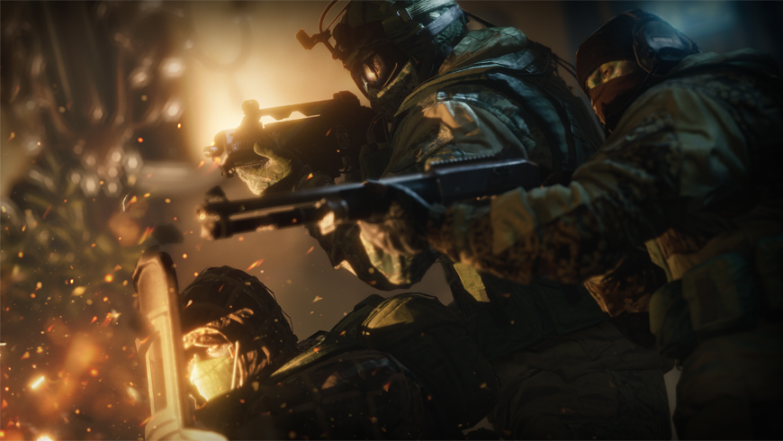
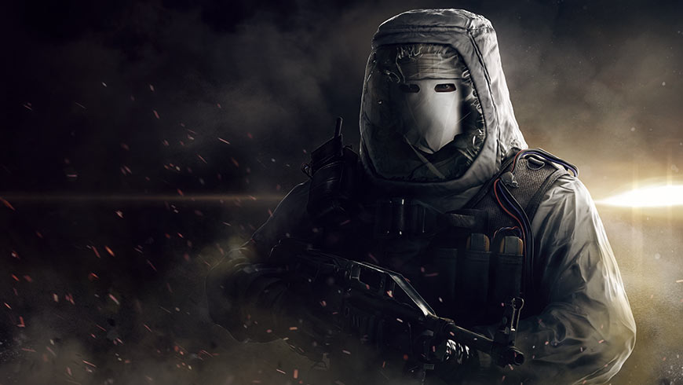
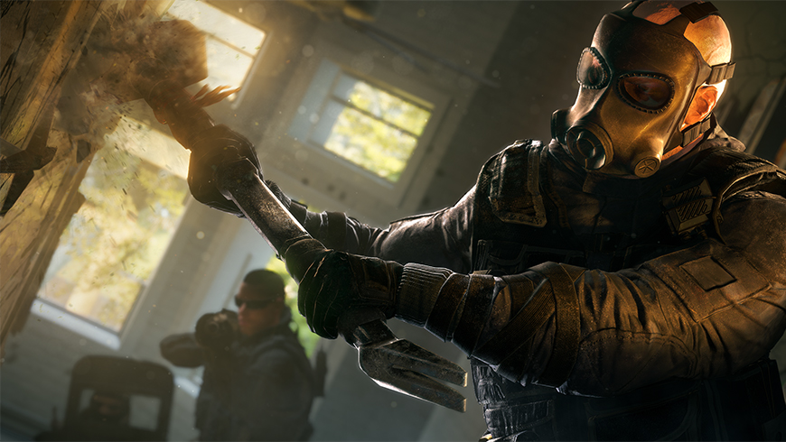

Список режимов
Сетевая игра (PVP)
- В игре будет 3 различных режима для сетевых баталий:
- ЗАЛОЖНИК: Штурмотряд должен обнаружить и вывести заложника из здания. Защитники должны помешать этому, устанавливая баррикады и ловушки.
- ЗАХВАТ ПОЗИЦИИ: Штурмотряд должен обнаружить комнату, в которой находится химконтейнер и удерживать ее, оставаясь внутри на протяжении 10 секунд.
- ЗАРЯД: Штурмотряд находит один из двух зарядов и приводит в действие деактиватор, расположенный неподалеку. Штурмотряд выигрывает раунд, если им удалось обезвредить заряд или уничтожить команду противника.
Антитеррор (PVE)
"Антитеррор" - режим, в котором можно играть одному или набрав команду (максимум, четыре союзника).
Антитеррор - задания, в которых игрокам предстоит противостоять новой угрозе в мире Rainbow Six - Белым маскам.
Игра использует произвольные сочетания режимов, карт, времени суток, а также заданий, мест проведения операций и настроек укреплений, чтобы каждый раз создавать для игроков уникальные условия.
Операции (Одиночная игра)
Выполните серию одиночных заданий и узнайте об особенностях игры Rainbow Six Осада (игровой процесс, оперативники, разрушаемость и пр.)
Каждую из тренировочных сессий можно пройти на низком, обычном или реалистичном уровне сложности.
Дополнительные задания становятся сложнее по мере разблокирования каждой последующей операции.